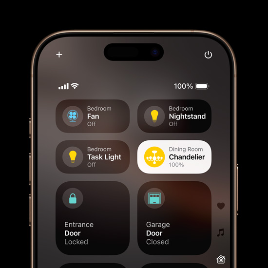

Personalize your Home Screen. Tint your icons with any color. Rearrange and resize apps and widgets. You can even lock or hide apps to protect sensitive information — it’s your call.

Choose your controls. Swap out your Lock Screen controls for ones you love to use more often. Or you can assign a control to the Action button.
Find your favorite shots faster. In the redesigned Photos app, your Collections are automatically organized by topic, like People & Pets.
Get expressive with text. Add playful, animated effects to any word, phrase, or emoji in iMessage — many of which are automatically suggested as you type.